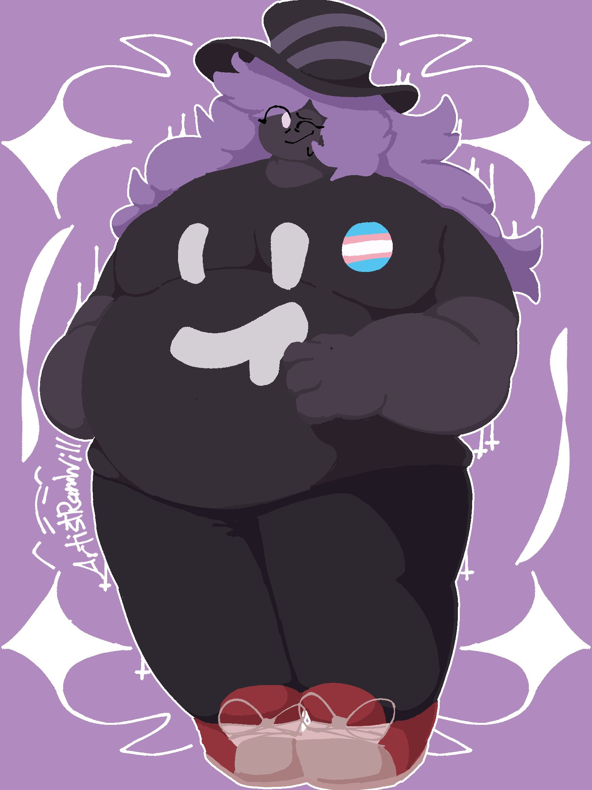
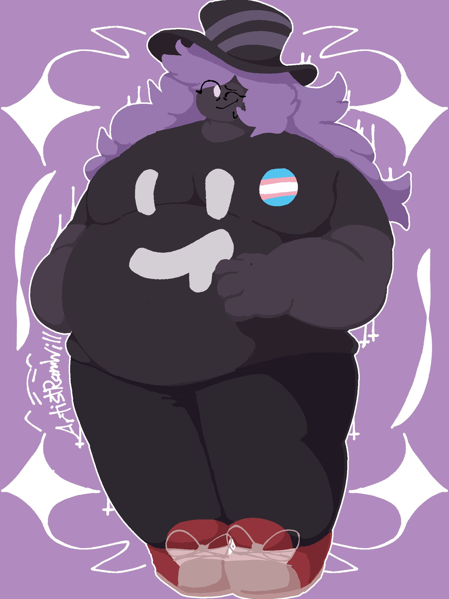

On the Subject of The Introduction
Hi! I'm so glad you've cared enough to give this a read!
Hi! I'm Maddy Galaxi- just call me Maddy, please! No need to be formal, I can barely manage it for this.
I'm uh uhm gay, polyamorous, and like puzzles and programming.
Chubby people are cool, but everyone is valid and welcome*! Free hugs offered to anybody who asks!
Please use Stell/Stells pronouns for me if you can- explained more further down.
Below here are my usernames on various socials if you care, and on later pages (and hyperlinked here!) are more stuff.
Commission Sheet: Here
Discord: cooldoom5
Twitter: @cooldoom5
Tumblr: @cooldoom5
Steam: Cooldoom5
Artfight: Cooldoom5
i dont use much else h

 
